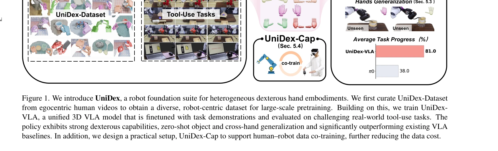
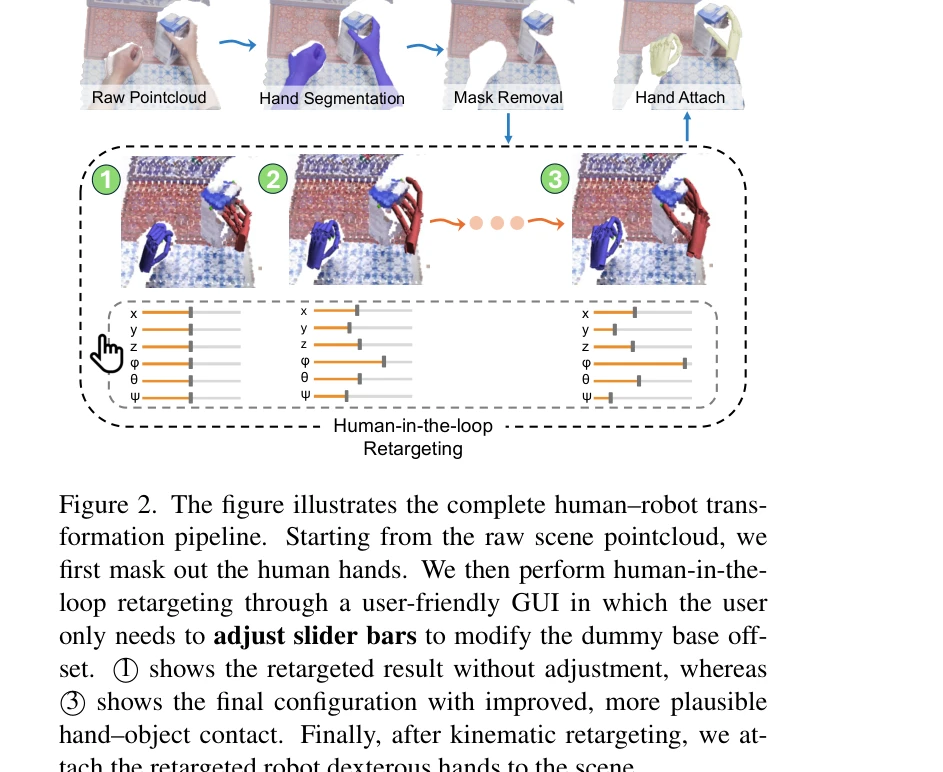

저자: | 날짜: | URL: https://dex-umi.github.io/

Figure 1. We introduce UniDex, a robot foundation suite for heterogeneous dexterous hand embodiments. We first curate Un
UniDex는 인간의 손 동영상으로부터 수집한 데이터를 기반으로 다양한 손가락 로봇 팔(dexterous hand)을 통일된 방식으로 제어하는 기초 모델 스위트(foundation suite)이다. UniDex-Dataset, FAAS 통일 행동 공간, UniDex-VLA 정책 모델, 그리고 human-robot 공동 학습을 지원하는 UniDex-Cap 캡처 시스템으로 구성된다.
Figure 1. We introduce UniDex, a robot foundation suite for heterogeneous dexterous hand embodiments. We first curate Un

Figure 2. The figure illustrates the complete human–robot trans-
총평: UniDex는 인간 egocentric 동영상을 활용한 대규모 dexterous hand 데이터셋과 FAAS 통일 행동 공간으로 손 간 일반화를 달성한 혁신적 작업이다. 실로봇 검증과 human-robot co-training의 실제 구현으로 실용성이 높으나, 더 다양한 손과 조작 과제로의 확장이 후속 과제이다.